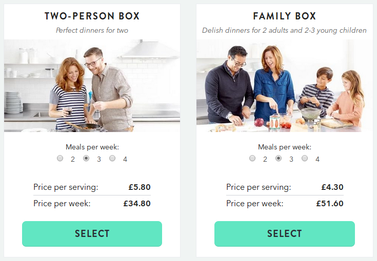
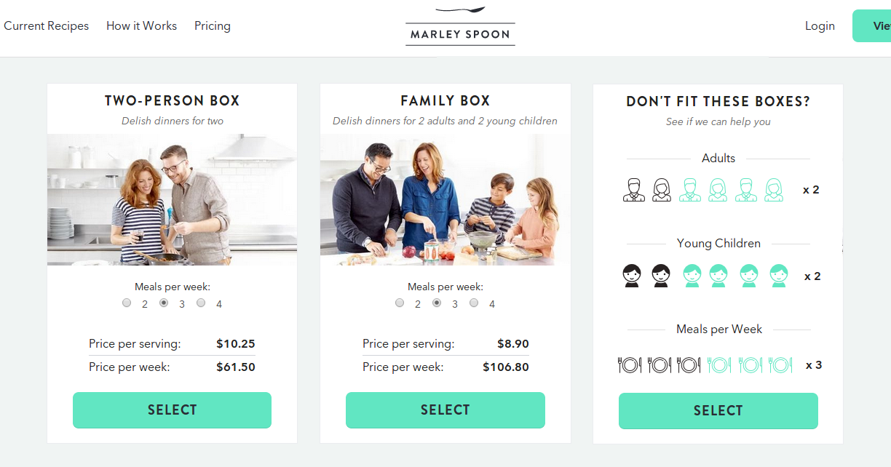
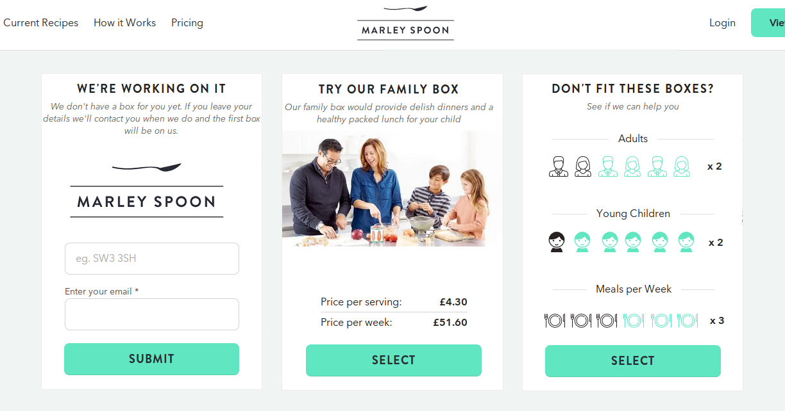

What's the problem?
The Marley Spoon pricing page is great. It's clear and simple to use.
However by only presenting the two options currently offered, Marley Spoon could be missing out on valuable information about the exact needs / wants of the consumers who are visiting this page and missing an opportunity to sell to consumers who don't fit into the two categories.

Current Marley Spoon pricing page
Food for thought
- Are there students / young professionals who are house sharing and looking for boxes that feed more than two adults?
- If a visitor selects 3 adults could Marley Spoon suggest that the portion sizes in a 2 person box would stretch to 3 adults?
- If they selected 4 adults could Marley Spoon sell them 2 boxes with a discount?
- Are there lots of families with only one young child? Could Marley Spoon sell them a family box by pointing out there would be food left over for pack lunches?
- If the current offerings don't work for a consumer could they leave their email and postcode in return for a discount when Marley Spoon launches the food box of their dreams?
A Solution?
One solution might be to offer users who for whom the two boxes currently available don't meet their needs the opportunity to indicate what they are looking for.

Mockup of a simple option selector
The users selection could be captured and they could be presented with the option to leave their details or if appropriate Marley Spoon could persuade them to buy one of the existing boxes.

Mockup showing the type of options that could be presented to the user
Summary
This information could be used to make important decisions about how the Marley Spoon offering evolves and to identify prospective clients for new products.
If the pricing page was changed, A/B testing could be used to see how vistors react differently to the changed page and answer the following questions:
- Do visitors to the page use the selector?
- Does the new interface reduce the percentage of consumers who click through to the next screen by a statistically significant amount?
- If this is the case is the information that is gained worth more than the potential loss of customers?